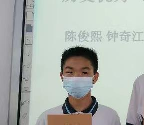
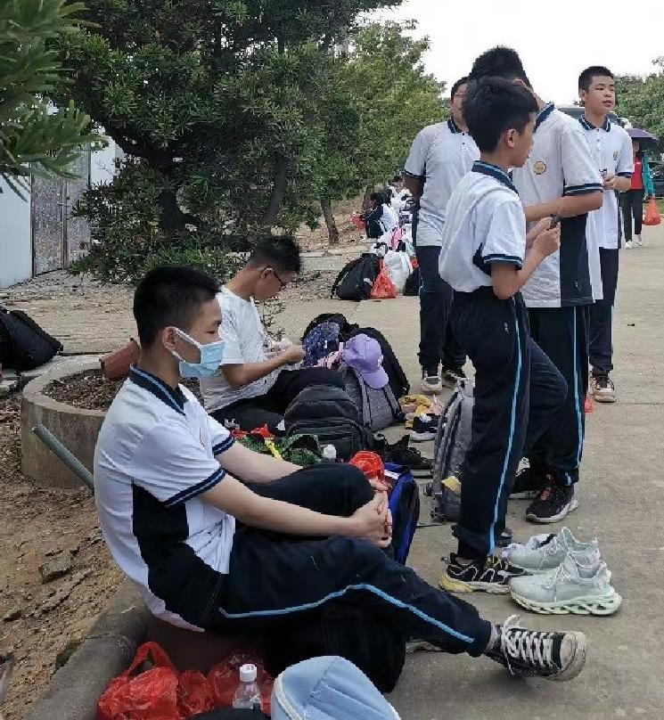
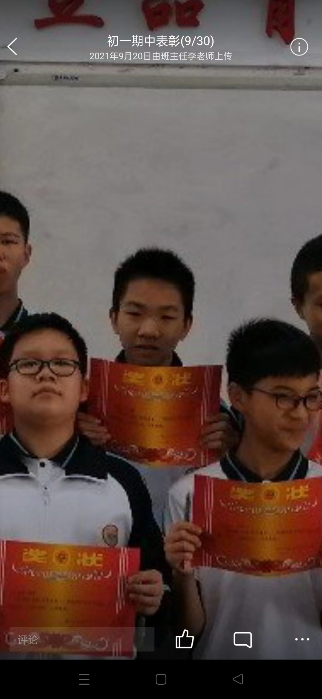

❤特别界面——献给我们亲爱的曾统❤
图片素材提供：Wu Min♀ Shit♂
网页制作：Homo
已修改版本
曾统是城北校草是怎么回事呢？曾统相信大家都很熟悉，但是曾统是城北校草是怎么回事呢，下面就让小编带大家一起了解吧。曾统是城北校草，其实就是因为他很帅，大家可能会很惊讶曾统怎么会是城北校草呢？但事实就是这样，小编也感到非常惊讶。这就是关于曾统是城北校草的事情了，大家有什么想法呢，欢迎在评论区告诉小编一起讨论哦！
啊丘~ buuuuu~ bu~ [手在衣服上摩擦一下]







曾统大帝东征：横扫欧洲
进击的曾统（改成兽统怎么样🧐）
曾统先辈，请和我交往！
曾统大帝东征，是指公元114～公元514年，曾统帝国国王曾统先辈对东方贝爷国等国进行的（性）侵略战争。公元前4世纪，曾统国征服小黑子各只因邦（读音：巴）。
114年，曾统帝国国王曾统先辈率军进攻（性侵？）贝爷，开始了让人们闻风丧胆，让世人震惊多年的曾统大帝东征。历时十年，经过伊苏斯之战、高加米拉战役、吉达斯普河战役，亚历山大征服了贝爷、小只因、小黑子、苏珊、紫砂等国。最终建起地跨欧、亚、非三洲的曾统帝国。
曾统大帝东征是一次掠夺性远征，对亚洲文明造成一些毁坏性的破坏，但是客观上也促进了东西方之间的联系，双方贸易往来更加频繁，许多小黑子移民到了小只因国，其生活方式、美食（如：大人小孩都爱吃，好吃到让人紫砂的曾统鲜美小鼻涕、曾统秘制小零食、红烧曾统鼻涕纸、曾统香翅捞饭、曾统油饼、曾统卡哇伊の答辩）、语言和武器（曾统鼻涕核弹）由此传入东方，同时西方也从东方汲取了不少文（鼻）化（涕）养分。经这一途径，贝爷和与东方文化获得了直接“交”流和“融合”的机会。
改编来源：亚历山大东征 | 百度百科